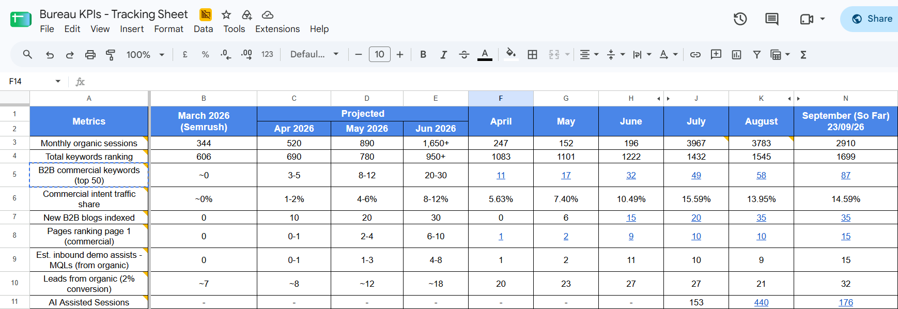
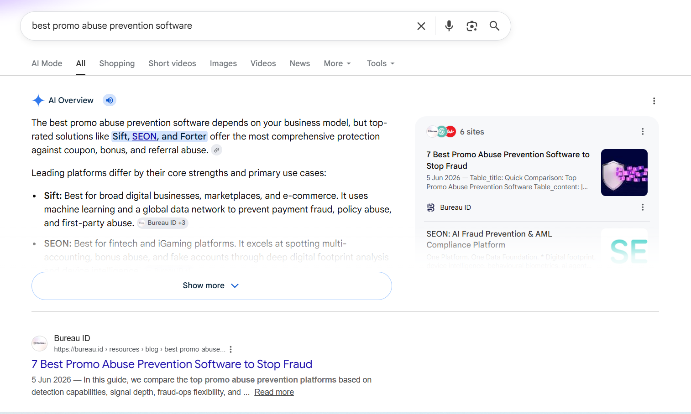
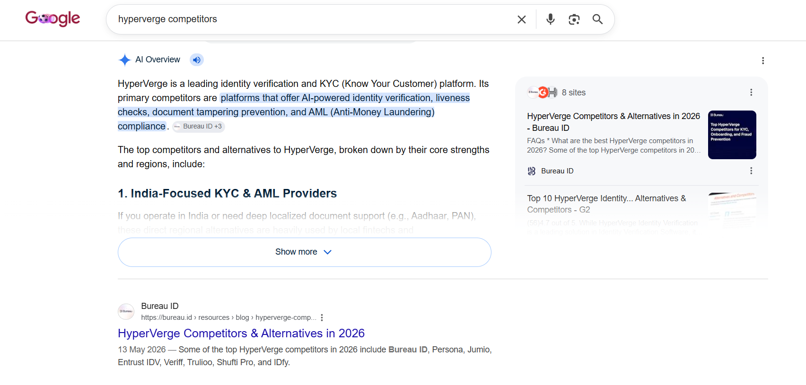
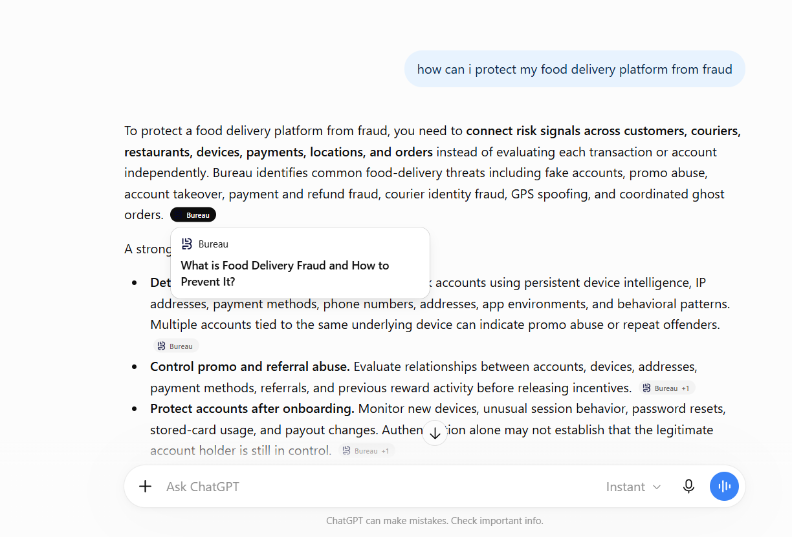
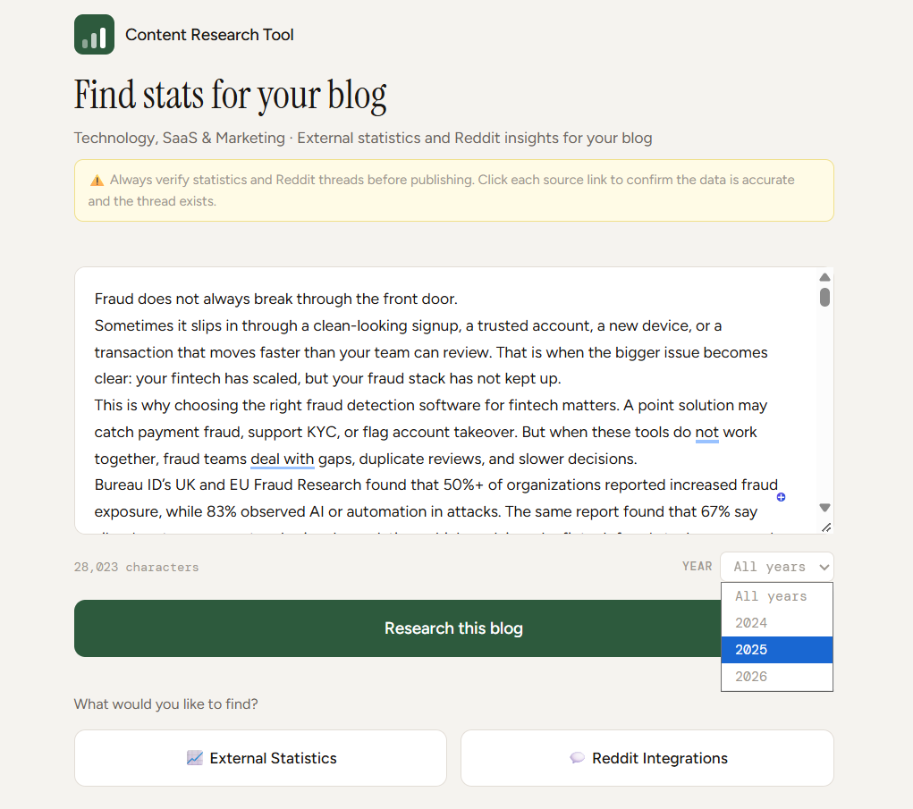
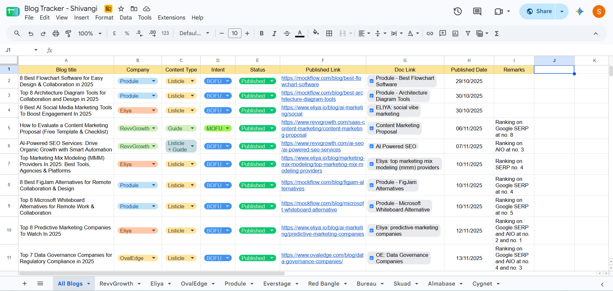

Content Writer Executive
October 2025 – September 2026
Over the past 12 months, I've written and published content across multiple client accounts, tracked its performance, and consistently delivered results that directly impacted business outcomes. This page puts the numbers together in one place.
MQLs — Projected vs. Actual
The client's primary goal was MQLs. We hit the June target of 4–8 by June itself, and exceeded it every month after.
The content I wrote is what's ranking
Of the 19 unique blog pages currently ranking for 87 B2B commercial keywords in the top 50, 15 are blogs I either wrote from scratch or revamped (79%). Only 4 are older, pre-existing blogs (21%).
As of 21 September 2026.
Pages Ranking Page 1 (Commercial)

The content took time to index and rank (a normal SEO pattern), which is why April–June traffic was below projection. But when the blogs started ranking in July, organic sessions went from 196 to 3,967 in a single month, and MQLs exceeded the June target every month after that.
Beyond organic rankings, the blogs are also being cited in AI Overviews and LLM responses. Here are a few examples:



Beyond Bureau, I have contributed to 10 other projects — RevvGrowth's internal blogs, Produle, OvalEdge, Skuad, Cygnet, Eliya (where I led content creation for a few months), Everstage, Red Bangle, MassMailer, and Almabase — and delivered strong results across several of these. To pick just one example, here's a snapshot from Produle:
Bureau isn't the only project where my content has generated leads. On the Produle project (MockFlow), several blogs I wrote have consistently brought in MQLs. Here are some examples from February to September 2026:
| Blog URL | MQLs |
|---|---|
| mockflow.com/blog/best-architecture-diagram-tools | 5 |
| mockflow.com/blog/best-flowchart-software | 1 |
| mockflow.com/blog/decision-tree-diagram | 1 |
| mockflow.com/blog/virtual-team-building-games | 1 |
| mockflow.com/blog/microsoft-whiteboard-alternative | 2 |
| Total | 10 |
I built a content research tool that helps the entire content team integrate external statistics into their blogs without spending extra time on manual research. It pulls relevant stats by topic and year, so writers can find and verify data points quickly.
This has reduced hours of manual effort across the team.

I've built automated content workflows using Claude Code and ChatGPT to ensure consistency across the projects I work on.
These workflows focus on creating outlines and blogs end-to-end with quality checks and formatting tasks that used to be done manually, specifically for Bureau and OvalEdge. I maintain and update the workflows for Bureau every month to ensure every feedback given by the client is accounted for.
This has helped standardize output quality across both projects while saving time on every piece of content.
Across all projects, I've written over 170 blogs to date. I maintain a blog tracker with a tab for each project and columns tracking everything from content type and intent to published links, doc links, published dates, and performance remarks.

I spent 2 months working closely with Fida, one of our new senior writers, helping her understand how to think about content and improve on both quality and strategy.
She's now preparing to lead her own project soon, and it has been incredibly rewarding to see her grow and develop her own approach to the work.
I would love to continue doing this going forward, to help Vaishnavi build our content team with a positive attitude and a growth culture.
As a senior writer, I want to keep growing. Specifically:
I want to strengthen my understanding of SEO and content strategy so the work I do is even more intentional and impactful.
I'd like to help onboard and develop new writers joining the team, the same way I worked with Fida.
I want to help Vaishnavi build an environment where the content team keeps learning and pushing each other forward.
Based on the results above and the current market rate for writers at my level, I'd like to request a revised CTC of 6.3 LPA.
This is within the 6.6 LPA limit defined for senior writers, and reflects both the impact I've delivered and the responsibility I'm taking on across projects.
I genuinely appreciate the team I work with.
We've seen some ups and downs over the past few months, and the constant support, positive feedback, and consistent collaboration that the content team provides make me better at my work every day.
I would love for the opportunity to keep building on that with Vaishnavi and Karthick's guidance and maintain a positive work culture within the entire company.